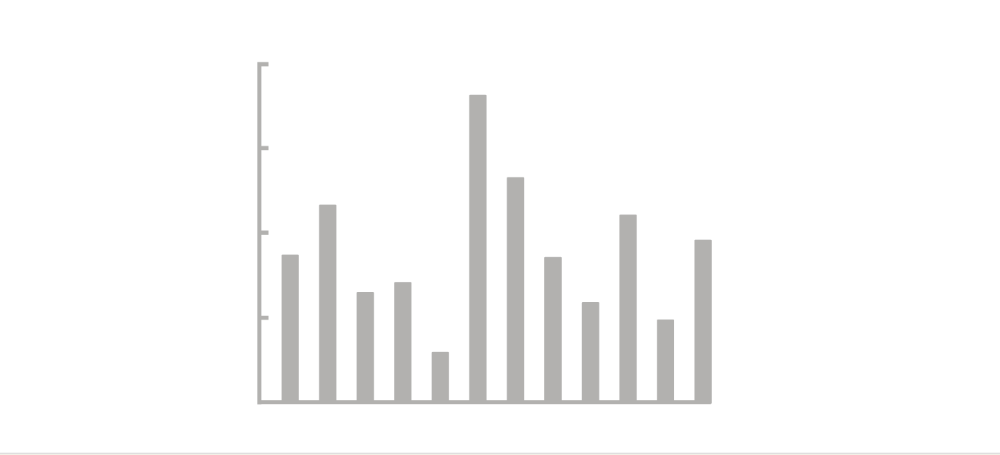

Urban Big Data Analytics
Class 8Data Visualization + Web Mapping
July 30, 2018
Instructor: Andy Hong, PhD
Postdoctoral Research and Teaching Fellow
School of Population and Public Health
University of British Columbia
Assignment 4 out
- More hands-on training in R
- EDA and visualization
- Send your R code to my email
- Assignment 4: link
Data Visualization
What is data visualization?
- Representing data in a graphical format
- Transforming numbers into visuals
- Good graphics are simple, intuitive, and yet tell a complex and powerful story
- Bad graphics are clusttered, embelished, and yet convey little and simple information
Typical activities in a day
New York Times graphicsThe rhythm of food
http://rhythm-of-food.net/peach
Tufte's 10 Rules

- Edward Tufte - Yale professor
- Living legend and expert in data visualization
- "The da Vinci of data"
- "Chart Master"
- "The Data Artist"
10 rules adapted from sealthreinhold.com
1. Show your data

2. Use graphics

3. Avoid chartjunk

4. Utilize data-ink

5. Use labels

6. Utilize micro/macro

7. Separate layers

8. Use multiples


9. Utilize color

10. Understand narrative

Visualization in R - ggplot2
# Initialize a plot
ggplot(data, aes(x = x, y = y))
Visualization in R - ggplot2
# Histogram
ggplot(data, aes(x = x, y = y) + geom_histogram()
# Scatter plot
ggplot(data, aes(x = x, y = y) + geom_point()
# Adding a trend line
ggplot(data, aes(x = x, y = y) + geom_point() + geom_smooth()
# Box plot
ggplot(data, aes(x = x, y = y) + geom_boxplot()
Interactive mapping in R - leaflet
# Initialize a map
leaflet(data) %>% addTiles()
Interactive mapping in R - leaflet
# Add markers
leaflet(data) %>% addTiles() %>%
addCircleMarkers(~long, ~lat)
# Visualize data
leaflet(data) %>% addTiles() %>%
addCircleMarkers(~long, ~lat, radius=~value)
# Add colors
leaflet(data) %>% addTiles() %>%
addCircleMarkers(~long, ~lat, color=~value)
# Add labels
leaflet(data) %>% addTiles() %>%
addCircleMarkers(~long, ~lat, label=~label)